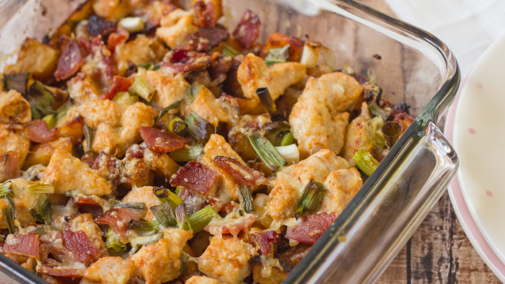

Loaded Baked Potato & Chicken Casserole

This one actually looks pretty dec. (The kids still saying dec?)
Yep, the wife asked me to make this one - the fuck do I look like, Ricky Gervais?
Wait, that's not the guy... who the fuck is this guy?

most overused GIF in the history of GIFs
AH it's Jeff Gordon!
Ingredients
- 1 kg chicken breast
- 8 potatoes
- 1/3 cup olive oil
- 1 1/2 teaspoon of salt
- 1 tbps fresh group pepper
Steps
- Preheat oven to 500 degrees.
wait, we're preheating before we do any other shit?
- In large bowl mix olive oil, salt, pepper, paprika, garlic powder and hot sauce.
- Add potatoes to bowl and allow to marinate for 10 minutes.
- Using a strainer and another bowl, drain the potatoes. Collect all remaining sauce in one bowl and set aside.
- Coat baking dish with cooking spray.
- Spread potatoes evenly in baking dish and bake for 45 minutes, stirring every 15 minutes.
- Fry bacon and set aside to drain.
- Using the bacon grease, brown the chicken cubes and add them to the remaining sauce. Coat the chicken cubes evenly in
the sauce.
holy fuck is this longest recipe ever or what? You're going to want to squeeze a 1-2-hour nap in here somewhere
- Once potatoes are done, spread the chicken on top. Bake for 12 minutes.
- Crumble the bacon, grate the cheese, and chop the green onions.
- Layer the cheese, bacon, and half of the green onions and bake for 3 - 5 minutes more, until the cheese is melted.
- Add fresh green onions before serving.
- give yourself a little pat on the buttooshka (sp?) because you deserve it after this Thanksgiving-dinner-level-casserole recipe-what-the-flying-shit-tickets